3D prints · No. 02
Three gel blaster parts from phone photos
Replacement parts for a toy gel blaster, and a magazine catch broken at the end I least suspected. The trigger works, and the catch and the battery are still waiting for their verdict.
- PLA and PETG
- 2 h 50 min printing
- about 38 g
- 10 prints
- 3 parts

My first printed trigger was thicker than the one it replaced, its pivot pin stuck out of the wrong face, and it fit nowhere. A complete failure.
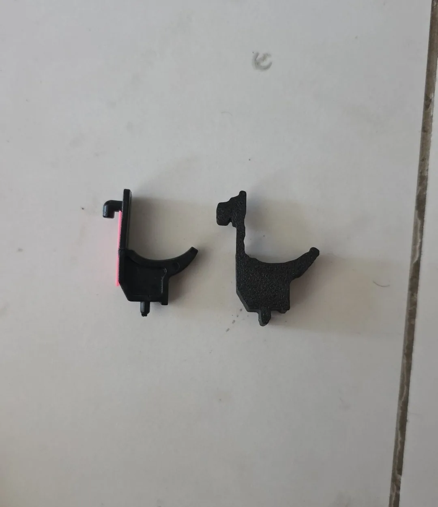
Every measurement of the gun came from a soft tape measure laid next to the part and a phone photo.
The blaster is an AK-style gel blaster, a battery-powered toy that fires soft gel balls. Three things on it needed fixing. The trigger had snapped, and gluing it back hadn't made it work. The magazine catch had lost the paddle you press to drop the magazine. And I wanted it to run on an 18650 cell tucked inside the stock. I measured and decided. The parts were drawn in CadQuery, a Python library for CAD, and sliced for the printer.
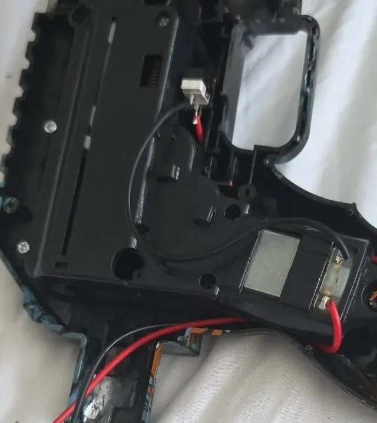
The battery
The battery came first, because it looked easy: a little cradle to hold the cell in the channel inside the stock. I measured the channel with the tape curved around its inside and got three centimetres. A curved tape is a rough way to measure a channel, so before the real thing, a test print of three cradle slices, 24, 26 and 28 mm wide. Eight minutes.
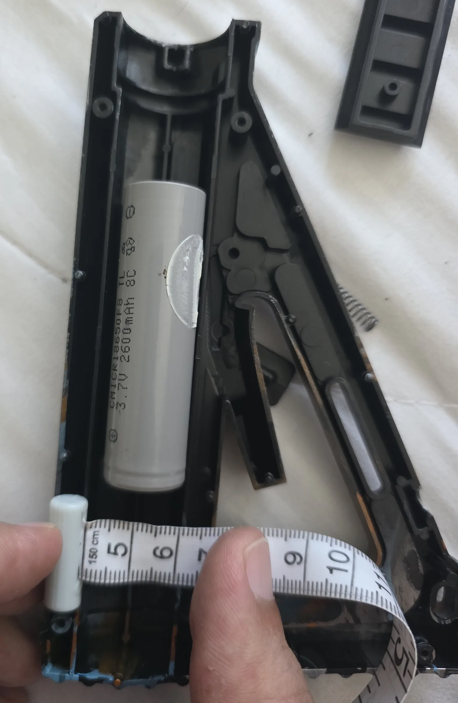
None of them went in. The channel is really 2 cm wide and the cell is 18.5 mm, which leaves no room for a wall on either side.
The cradle · never printed in full
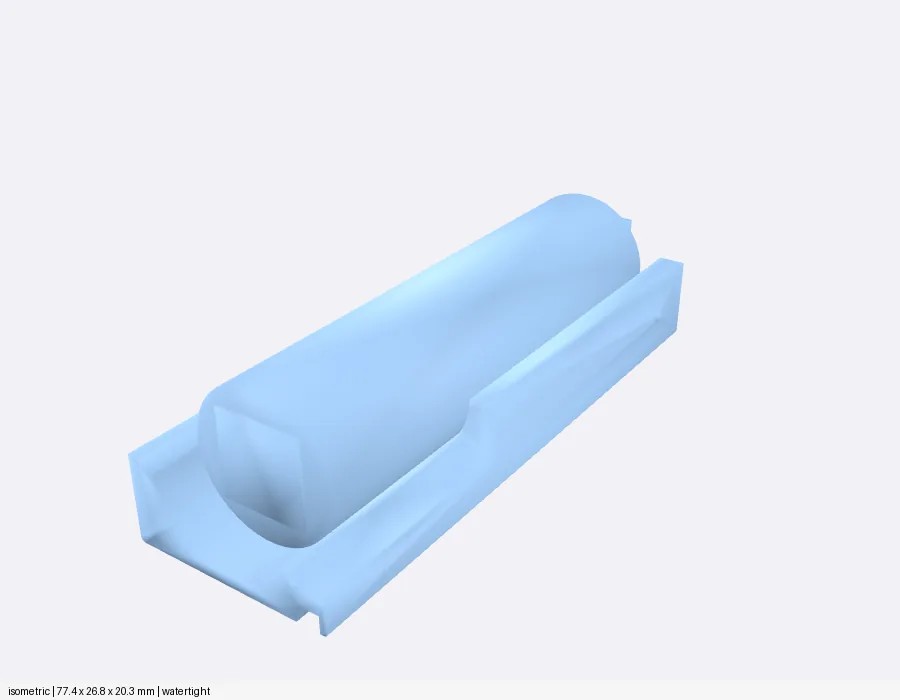
The four end caps
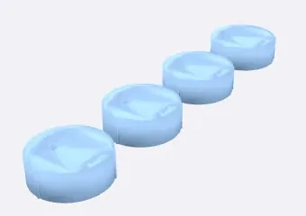
So the walls went away and only the ends stayed: two round caps that plug into the channel, one at each end of the cell, each holding a contact plate, with a hole for the wire. Four caps, so two spares, in 14 minutes. I super-glued them into the stock and fitted the contacts.
The trigger
I'd started with three numbers: 3 cm long, 1 cm for the top part that presses the switch, and half a centimetre for the part below it. The first design read them as thicknesses, a 10 mm top half and a 5 mm bottom half, put the pivot pin standing off the face, and went to the printer before I'd seen a picture of it. Two copies, 21 minutes. That's the one on the right in Fig. 01.
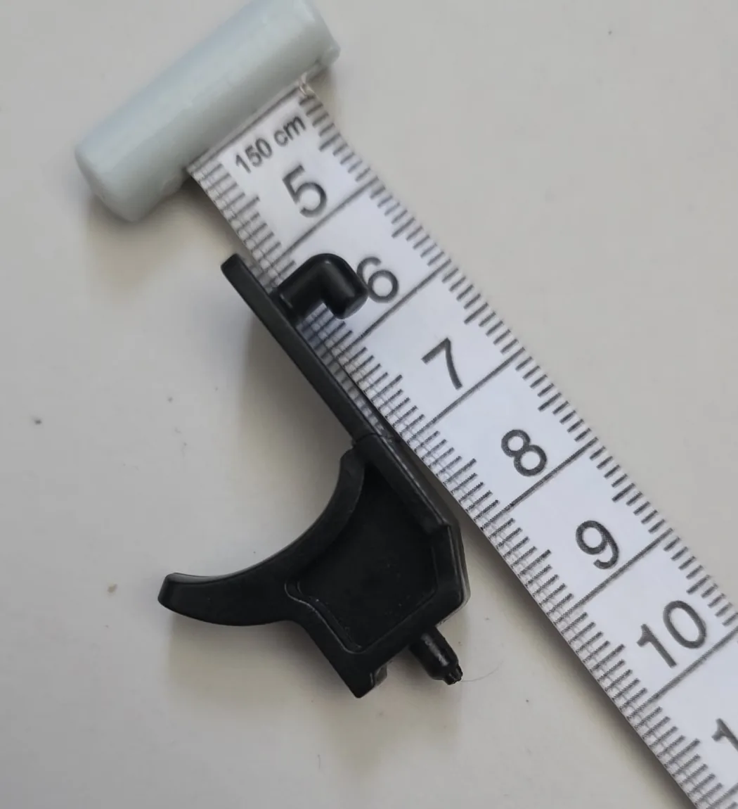
My numbers meant something else. The 1 cm was the depth of the thin plate along the trigger's back edge, the plate whose hook presses the switch. The half centimetre was the thickness of the body. The plate itself is only 2 mm thick, because it slides in a slot inside the gun. Three photos looking at the trigger end-on settled the real shape.
Photo · the back of the original
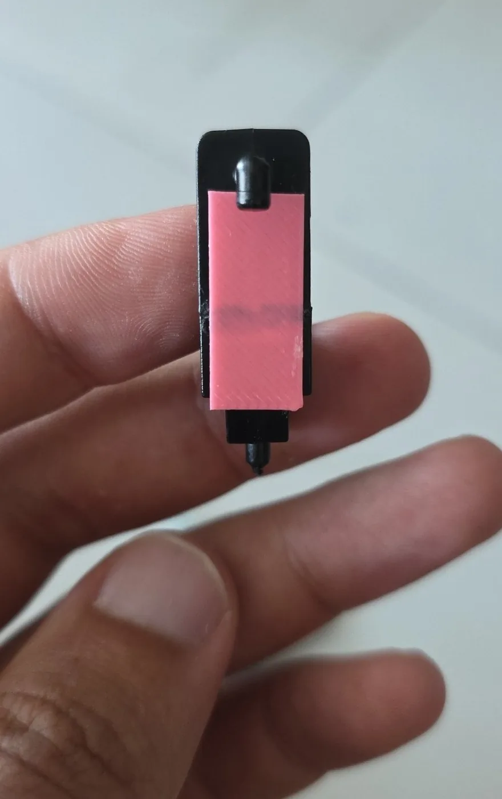
Drawn · the same view
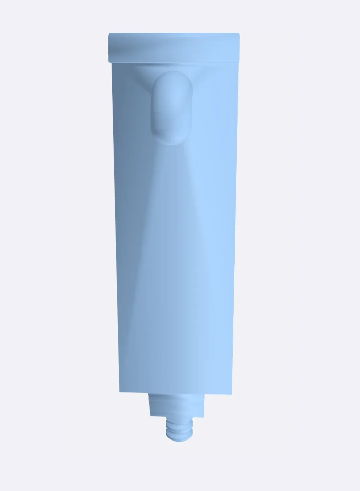
Two rules came out of that day. Nothing prints until I've seen a picture of it. And a part that has to fit gets a coupon first: just the piece that matters, small and fast.
The trigger's coupon was the back plate, the hook and a wider foot at the end of the plate, 8 minutes of printing. It fit, with one note: remove the foot. Without it the plate ends flat.
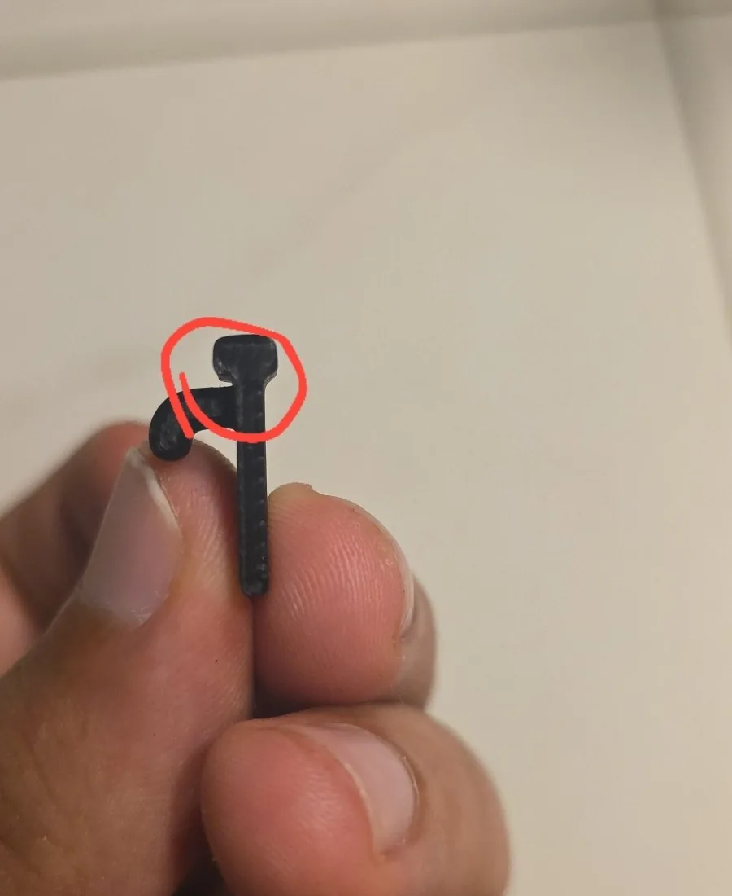
The final trigger printed two copies in red PLA in 15 minutes. Neither was quite right: the start of the plate was a bit too long and the end that presses the switch a bit too short. I cut the long end back with pliers and fixed the short one myself. Then it worked perfectly.
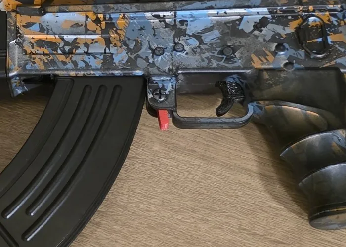
The wrong end
The magazine catch was harder, because I didn't know what the whole part looked like. What was left is a small lever. At one end is the ring, which pivots on a pin through its hole. Higher up, the wedge sticks out and hooks the magazine. Beside the ring sits a small stub. At the opposite end, the far end, the lever looked snapped off. The paddle you press had broken off somewhere, and I knew it needed about 1 cm more to press on.
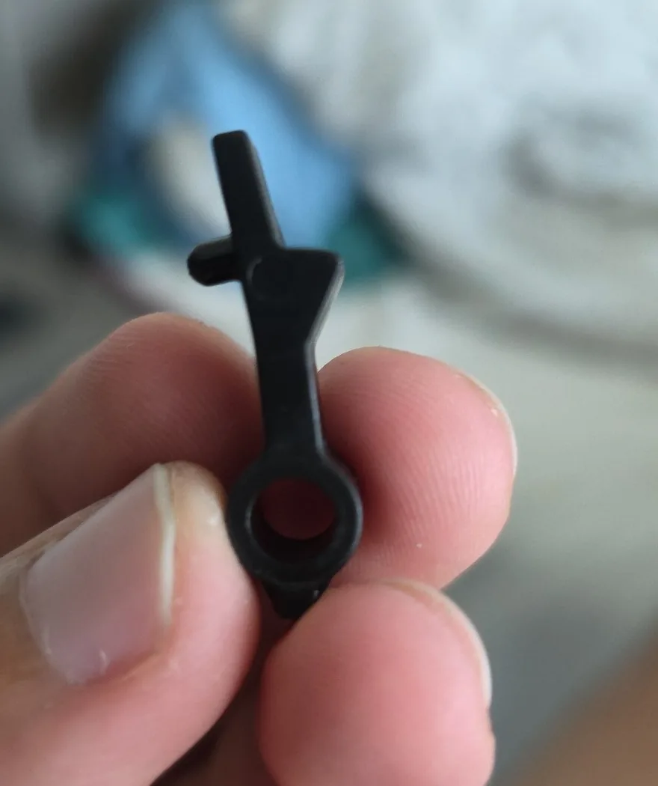
This time the thickness came from photos of the lever's edge: 9.5 mm. The new paddle went on the far end, and it printed in 11 minutes. Only once it was off the bed did I see it: the paddle was on the wrong end. It belongs at the ring end.
The far end
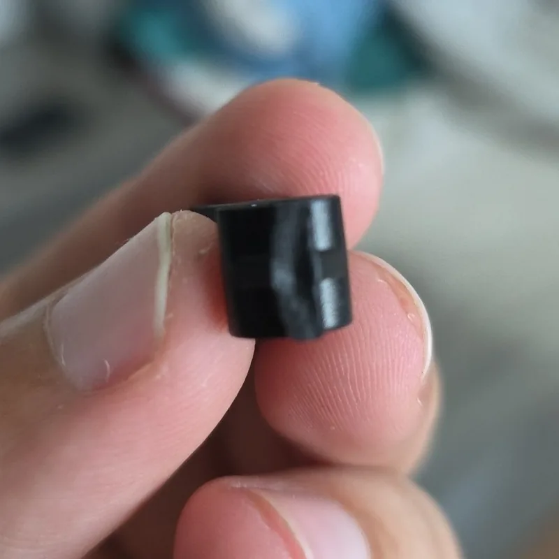
Beside the ring
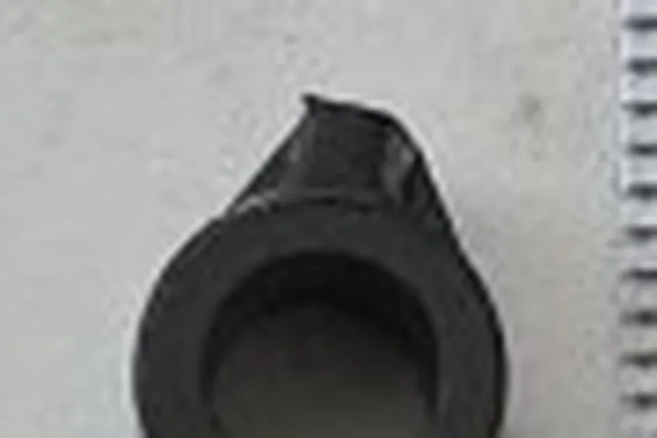
The far end wasn't broken at all. It was flat and smooth, with a moulding line on it. The real break was the stub beside the ring, so small it had read as a tab. The paddle moved there, 10 mm long and the full 9.5 mm thick, with three grip ridges.
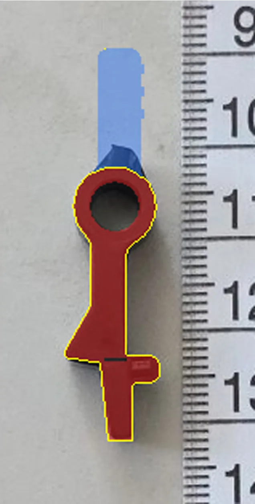
Before the corrected catch printed, I spotted a weak point at the wedge: it would snap there, easily. The model had a 0.4 mm gap cut right across the lever, so only the wedge held the two halves together. I closed it, and now every part gets its cross-section checked along its length for thin spots before it prints. The catch printed in red PETG in 11 minutes, early on Monday morning.
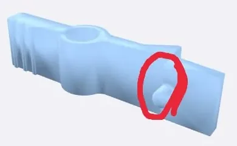
Twenty-five balls
The balls were a different kind of mistake. There was a file of 25 balls, 5.9 mm each, on a thin plate you snap them off: printed ammunition. Hard plastic balls in a blaster built for soft gel balls can jam it and hit a lot harder, and a ball printed on a flat bed only touches it at one point. I was sure you could print them, so I did, in PETG, at ten to four on Monday morning.
Eight minutes in, the filament was everywhere.
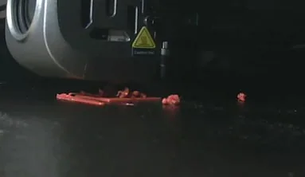
Each ball starts as a dot smaller than the nozzle, and its whole lower half leans out over nothing. PETG stays soft and sticky for longer than PLA, so the nozzle dragged blobs around and knocked the small balls loose, and my PETG profile cools gently, where tiny parts need the fan at full. I stopped it and dropped the idea.
For a day and a half. On Tuesday evening the same 25 balls went back on the bed in pink PLA+, and this time the print ran to the end, 27 minutes. In the blaster they fired weakly. My guess is the size: a gel blaster's barrel is made for gel balls of 7 to 8 mm, and these were 5.9 mm, so the air went past them. So a size test followed the same night, 24 balls in four strips of 6.6, 7.0, 7.4 and 7.8 mm, 46 minutes, each strip marked with pips so I can tell them apart.
Where it stands
The trigger works. The catch and the battery haven't been tried yet, and the balls are waiting for their size to be picked.
Now I find the break before I draw the replacement. The end that looked broken was the one end that wasn't.
The short version
What went wrong, and what fixed it.
- A battery cradle with walls didn't fit a 20 mm channel around an 18.5 mm cell.Two end caps that hold the contacts, nothing along the sides.
- The first trigger was too thick, with its pin on the wrong face.Read each number as the part it measures, a picture before printing, a coupon first.
- The coupon fit but had a wider foot at the end of the plate.Removed it. The final trigger needed a trim and then worked.
- The new paddle went on the end that wasn't broken.Found the real break, a stub beside the ring, and moved the paddle there.
- A 0.4 mm gap across the lever left one weak spot.Closed it, and check the cross-section along every part now.
- Tiny PETG balls dragged into strings 8 minutes in.Dropped, then printed in PLA+ two days later. They fired weakly, so a size test is waiting for its verdict.
How it was printed
- Printer
- Creality K1 Max, rooted, Klipper
- Slicer
- OrcaSlicer 2.4.2, K1M profiles
- Measuring
- A soft tape measure next to the part and phone photos. No calipers.
- Battery end caps
- 4 caps (2 spares), 14 min, 5.46 g, no supports
- Trigger
- Red PLA, 0.20 mm layers, 100 % infill, 2 copies in 15 min, 5.1 g
- Magazine catch
- Red PETG, 0.16 mm layers, 100 % infill, 11 min, about 2 g
- Balls
- 25 at 5.9 mm, red PETG, stopped after 8 min. The same 25 in pink PLA+, 27 min, then 24 in four sizes, 46 min
This is a toy. Its exact brand and model aren't known, so the post doesn't name one.